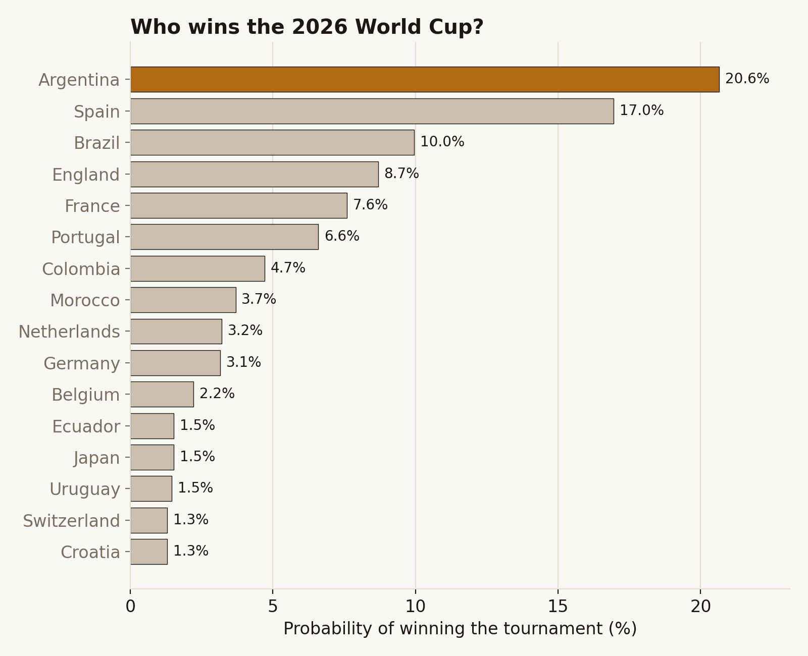
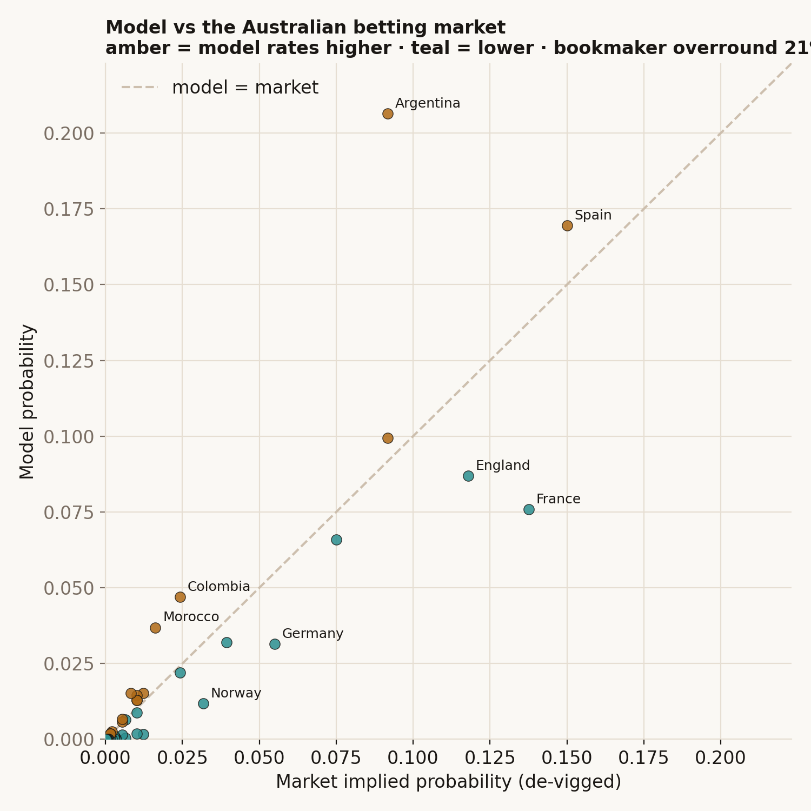

The problem
Every World Cup, everyone has an opinion on who'll win — pundits, bookmakers, your group chat. Opinions are cheap and rarely scored afterwards. I wanted something better: honest probabilities that can be checked against what actually happens, and that update themselves as the tournament unfolds.
So this isn't a hot take. It's a model that rates every national team from 150 years of match results, plays the entire 48-team tournament 50,000 times, and counts how often each team lifts the trophy. Then — and this is the part that keeps it honest — it re-runs every morning on the real results as they come in.
Finding 1 — the favourites, in numbers
Before a ball is kicked, the model makes Argentina and Spain the clear front two, with Brazil, England, France and Portugal a tier below. No surprises — but now there's a number attached, not a vibe.

Explore the live, interactive forecast →Finding 2 — the model mostly agrees with the bookies, except where it doesn't
The betting market is a brutally good forecaster — thousands of people putting money on the line. A fair test of any model is: does it just echo the market, or does it see something different?
Mostly it agrees. But it rates Argentina well above the Australian market, and France and England below it. That's the signature of a model built purely on results: it loves Argentina's recent record, but it can't see the things humans price in — an ageing squad, a key injury, who's in form. The disagreement is the interesting bit, and I don't paper over it.
One number worth knowing as a punter: the bookmakers' outright odds bake in a 21% margin. Their "probabilities" add up to 121%, not 100% — that extra 21 points is the house edge, the same lesson as my blackjack project.

How the model is built and tested →What I built
- A ratings model that learns each team's attacking and defensive strength from every men's international since 1872, weighting recent games far more heavily.
- A tournament simulator that plays the real 2026 format — 12 groups, the eight best third-placed teams, the exact knockout bracket — fifty thousand times.
- A daily auto-refresh: a free scheduled job pulls the latest results, fixes what's happened, and re-forecasts the rest. No servers, no cost, nothing to maintain.
The bottom line: a forecast you can actually hold to account. It's calibrated (when it says 30%, those things happen about 30% of the time), it's honest about where it disagrees with the market and why, and from 11 June it tells its own story as the results land.